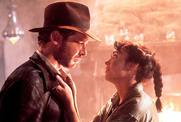

Archeologist and adventurer Indiana Jones is hired by the US government to find the Ark of the Covenant before the Nazis.
The year is 1936. A professor who studies archeology named Indiana Jones is venturing in the jungles in South America searching for a golden statue. Unfortunately, he sets off a deadly trap doing so, miraculously, he escapes. Then, Jones hears from a museum curator named Marcus Brody about a biblical artifact called The Ark of the Covenant, which can hold the key to humanly existence. Jones has to venture to vast places such as Nepal and Egypt to find this artifact. However, he will have to fight his enemy Renee Belloq and a band of Nazis in order to reach it.